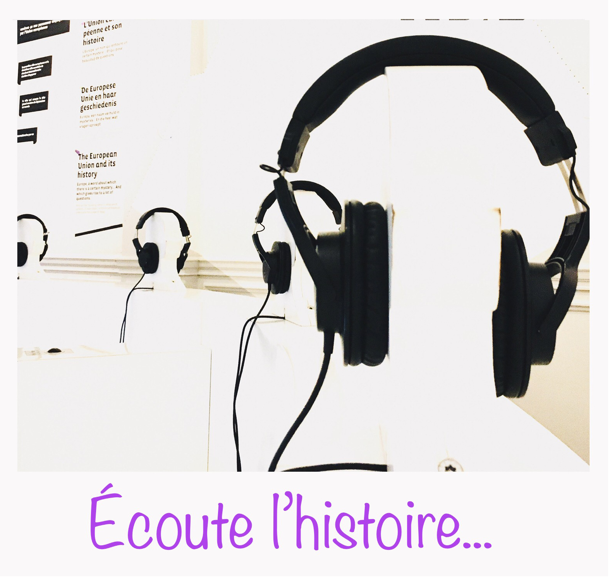

Présentation de l'exposition Brussels !
Le 9 janvier, nous avons visité l'exposition experience Brussels! située 4, Rue Royale à 1000 Bruxelles.
Se laisser emporter par le jeu et dénicher les réponses tout en naviguant de salle en salle. Partir à la découverte de l’histoire bruxelloise d’une manière plus interactive tout en répondant à un petit quiz afin de pimenter cette visite, voici ce que nous propose cette exposition. Seule ombre à cette activité : peut-être ce goût amer que nous avons laissé aux autres participants.
Se laisser envoûter par l’histoire de vrais Bruxellois et s’enivrer de quelques mots en « brusseleir ».
 Se laisser envoûter par le visuel d’une maquette où nous pouvons observer le tout Bruxelles afin de reconnaître certains bâtiments, suivre des yeux les lignes du tram, métro ou train…
Contempler un film nous relatant l’histoire de notre capitale.
Sans oublier de passer par le photobooth afin d’immortaliser notre passage…
Que nous soyons bruxellois ou de passage, parcourir cette exposition nous permet de contempler la capitale de l’Europe sous une forme plus innovante.
Se laisser envoûter par le visuel d’une maquette où nous pouvons observer le tout Bruxelles afin de reconnaître certains bâtiments, suivre des yeux les lignes du tram, métro ou train…
Contempler un film nous relatant l’histoire de notre capitale.
Sans oublier de passer par le photobooth afin d’immortaliser notre passage…
Que nous soyons bruxellois ou de passage, parcourir cette exposition nous permet de contempler la capitale de l’Europe sous une forme plus innovante.
 De découvrir ou redécouvrir ce que Bruxelles à offrir et mettre en valeur les différents endroits, institutions, ainsi que notre population. Que nous soyons d’ici ou de l’autre côté de la frontière cette exposition permet d’apercevoir notre capitale sous une facette différente. Tout ceci d’une manière interactive, nous permettre de le faire sous forme de jeux en écoutant l’histoire du pays dans certaines salles, ou d’entrevoir un moment de vie dans d’autres est innovante. Sans oublier toutes les informations anecdotiques qui sont écrites deci delà sur les murs. Laisser traîner nos yeux sur les immenses photos pleines de vie et de couleur décorant le hall est une belle manière de nous rappeler que notre ville resplendit de tonalité. Pouvoir prendre le temps et regarder un film afin de nous rappeler comment nos rues, nos maisons, nos champs ont évolué afin de permettre à cette belle capitale de s’agrandir de se modifier au fil des années. Apercevoir une map avec toutes nos lignes de transport confondues de part et d’autres était instructif. Une seule note de conclusion merci de nous avoir transmis cette découverte que nous nous plaisons à partager.